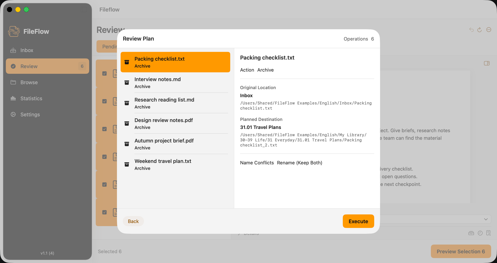
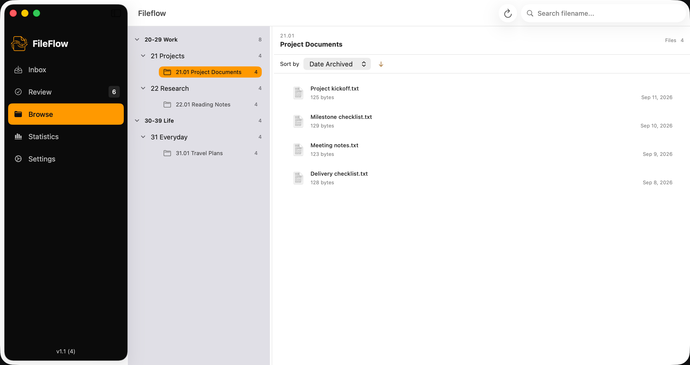
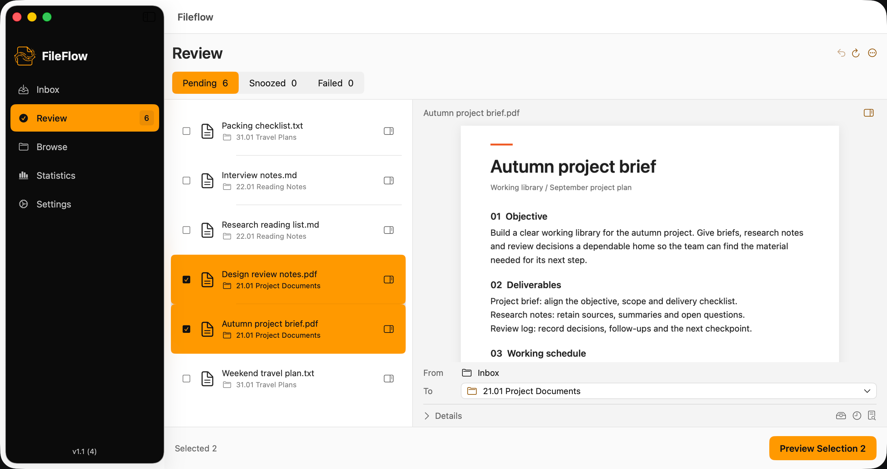

FILEFLOW
从三个文件开始。
做一次小尝试，走完第一次整理。
1. 准备一个小实验
在 Mac 本地创建两个互不包含的目录，例如“FileFlow 试用来源”和“FileFlow 试用归档”。把三份不含隐私的文件副本放入来源目录，例如一份 TXT、一张 PNG 和一份 PDF。原始文件留在别处，不用唯一副本试验。这次先不使用云同步目录或外接磁盘。
2. 选择来源与归档位置
首次设置时，选择并授权试用归档目录。使用 Johnny.Decimal 模板，或沿用已有结构并提前创建一个目标子目录。再添加试用来源文件夹。初始化前核对完整路径：设置可能创建 FileFlow 管理数据，这与整理来源文件是两件事。第一次先跳过 AI。
了解 Johnny.Decimal3. 为文件选择归属
打开 Inbox 并扫描来源目录，选中三个示例文件，点击 Archive to...，选择目标位置并确认。接下来会打开 Review Plan，此时尚未执行整理计划。
4. 把计划看清楚
核对选中的文件、完整来源与目标路径，以及重名文件的处理方式。第一次试用不要覆盖已有文件。需要调整时选择 Back 返回；确认正确后，再选择 Execute 执行。即使本次整理能够撤销，也不能找回被覆盖文件的旧内容。

5. 检查实际结果
先阅读操作结果，再打开目标目录，确认文件能够正常打开。部分失败不能算作整批成功。目录浏览和统计可以帮助核对，但索引或操作收据本身不能证明每个文件都完整可用。

6. 尝试一次符合条件的撤销
使用最近一次整理可用的撤销入口，并阅读提示。普通归档操作的恢复可能找回来源文件，同时保留归档副本；也可能使用 Recovered 位置或需要手动处理。完成后检查两边的实际文件。如果撤销不可用，先保留文件和元数据，查看具体原因。
7. 需要时，再加入 AI
在设置中配置端点、模型、协议和你有权使用的密钥，验证连接后保存。连接测试成功不代表分类一定正确。发起分类后，逐个审核建议的目标位置，再通过 Preview Selection 查看计划。云端请求会向服务商发送元数据和候选位置，请继续使用不含敏感信息的示例文件。

如果过程被中断
重试前先核对来源和目标文件，目标处可能存在不完整副本。中止或忽略不等于撤销，也不会自动清理残片或恢复文件。不要反复执行被阻止的计划，也不要删除管理数据来绕过提示。保留原始文件和应用报告的恢复信息。
如果根目录或管理数据丢失
先确认原目录或磁盘仍然可用，必要时重新授权。不要把暂时不可访问的目录当成空目录重新初始化。恢复收据可能帮助说明最近操作，但不能重建丢失的文件内容。请找回原位置或使用独立备份。
然后，再多整理一点
看过计划、核对过结果，并理解恢复的实际效果后，再逐步增加文件。不必第一次就整理整个磁盘。